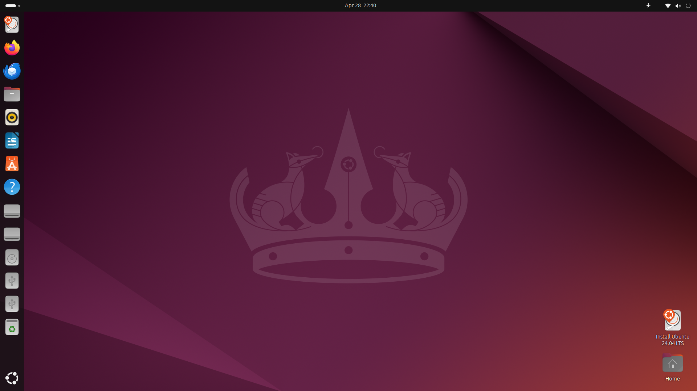

Ubuntu

Ubuntu is the world's most popular Linux distribution, maintained by Canonical. It offers a polished GNOME desktop, a massive software ecosystem, and long-term support releases every two years, making it the go-to choice for newcomers and professionals alike.
Desktop Environment
GNOME 46
Package Manager
APT / Snap
Latest Release
24.04 LTS (Noble Numbat)
Init System
systemd
Support Cycle
5 years (LTS)
Architecture
x86_64, ARM64
Key Features
- 5-year LTS support with security patches and hardware updates
- Huge software repository via APT and the Snap Store
- Excellent out-of-the-box hardware compatibility, including NVIDIA drivers
- Active community forums, Ask Ubuntu, and official documentation
- Clean GNOME desktop with Ubuntu's own Yaru theme
- WSL2 support, run Ubuntu natively inside Windows